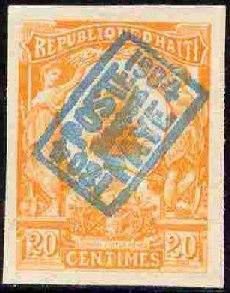
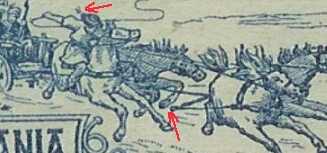

Note: on my website many of the
pictures can not be seen! They are of course present in the
catalogue;
contact me if you want to purchase it.
I don't know much about this stamp printer. His name is probably spelt E.Côte, although I'm not sure. He was the printer of some 1904 Haiti stamps, which were most likely reprinted by him as well for some Paris stamp dealers (Louis Dumonteuil d'Olivera or René Carème).

From the court case concerning the North Borneo forgeries of
the stamp forger Lowden at
http://www.oldbaileyonline.org/browse.jsp?path=sessionsPapers%2F19090622.xml,
we can find out how reprints and forgeries of these stamps found
their way in the stamp market:
"Carame said he was the printer of the 1904 issue of
Haiti stamps, which had been sold by Mons.
Dumonteuil. He also said he had printed some
Somali Coast stamps. He produced what I should say were printer's
proofs of other issues of Haiti, which made it look extremely
probable that the man had got the entree to somebody who was able
to get the Haiti plates, and we had no reason to doubt him."
Note 1: The name of René Carème is consistently spelt as Rene
Carame.
Note 2: The person Dumonteuil (Louis Dumonteuil
d'Olivera) mentioned in the proceedings is a known stamp forger
in Paris (see Focus on Forgeries, by V.E.Tyler). He was involved
in forged Haiti and Colombia stamps (and probably many more).
Note 3: Tyler in 'Focus on Forgeries' says these stamps were
printed by E.Cote (spelt differently as M.Côte on
http://www.stampprinters.info/SPI_country_france.htm, but the
stamps themselves have 'E.COTE' in the design under the left
value label).
Images of counterfeit stamps of this issue can also be found at:
http://www.archive.org/details/CounterfeitHaitianPostageStamps-1904.
Cote also seems to have been involved in printing forged Rumania 1903 stamps.
